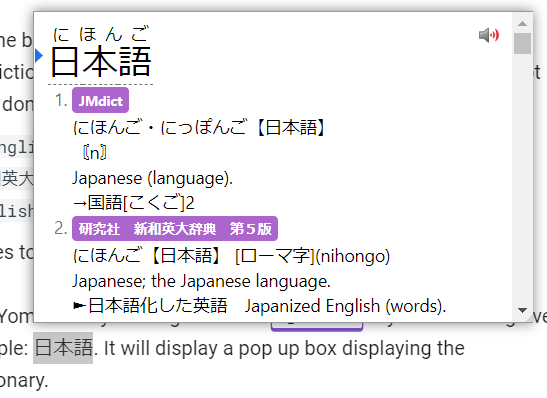

Yomichan Setup Tutorial¶
What is Yomichan?¶
Yomichan is a browser extension that allows you to look up Japanese words with both the meaning and the reading on web pages with ease.
Getting Started¶
Yomichan is available for both Chromium and Firefox based browsers. You can find the respective versions below.
Chrome Web Store
Firefox Add-Ons
Once installed, it will open a new tab page, just close it for now so we don't confuse each other.
Acquiring Dictionaries¶
When you first install Yomichan, you need to load dictionaries into it in order to use it.
These files use the .zip extension and are not to be extracted by the user.
You can find my collection of Yomichan dictionaries below. This will have everything you need and (probably) don't need. 
→→→→Shoui's Yomichan Dictionary Collection←←←←　　
I recommend you install the following dictionaries:
- Bilingual/[Bilingual] JMdict (English).zip
- Bilingual/[Bilingual] 新和英.zip
- Kanji/[Kanji] KANJIDIC (English).zip
- Grammar/Dictionary of Japanese Grammar.zip (NEW!)
Installing Dictionaries and basic usage¶
- Click on the icon in the browser toolbar.
- Click on the icon to access the settings page.
- On the left sidebar, click on "Dictionaries" and then click on "Configure installed and enabled dictionaries…"
- Click the "Import" button on the bottom.
-
Here's where you select the dictionaries to import. Please only import the following.
[Bilingual] JMdict (English).zip[Bilingual] 新和英.zip[Kanji] KANJIDIC (English).zipGrammar/Dictionary of Japanese Grammar.zip(NEW!)
-
Please wait for the dictionaries to import. This could take a while.
- Once complete, you can test Yomichan by holding down the Shift key and hovering over Japanese text. Here is a sample: 日本語. It will display a pop up box displaying the definitions separated by dictionary.

Click anywhere outside of the box or press the Esc key to dismiss. Click on an individual kanji in the headword to view kanji information (only functional with KANJIDIC installed).
- You can click the
 button to hear the word being pronounced by a native speaker.
button to hear the word being pronounced by a native speaker.
In your browser extensions toolbar, if you click on the Yomichan logo, then on the  icon or the Alt+Ins keyboard shortcut to access Yomichan Search, this is where you can use Yomichan as a standalone Japanese to English dictionary.
icon or the Alt+Ins keyboard shortcut to access Yomichan Search, this is where you can use Yomichan as a standalone Japanese to English dictionary.
Pop up box size can be edited with advanced settings enabled.
A full dark mode can be enabled in the settings too.
JMdict is the dictionary hosted on Jisho.org. Jisho.org is not its own dictionary, rather it's a portal that accesses JMdict. This is the most common Japanese to English dictionary.
新和英 (Shinwaei) is a Japanese-English dictionary intended for Japanese people. It has many example sentences which can prove to be very useful for Japanese learners. A variation of this with even more example sentences is called [Bilingual] 研究社　新和英大辞典　第５版.zip can also be found in my dictionaries collection.
KANJIDIC is a kanji dictionary, it allows you to view information of individual kanji.
Dictionary of Japanese Grammar, or 日本語文法辞典(全集), is a dictionary that helps you look up grammar (duh!).
Allowing access to file URLs¶
Enabling this allows you to use Yomichan on local files such as .HTML files.
PDF Files
On Chrome, it is impossible to use Yomichan on PDF files.
Chromium:
- Right click the
- Click "Manage Extensions"
- Enable "Allow access to file URLs"
Firefox:
- Enabled by default.
Bonus: Adding Forvo extra audio source¶
You may encounter missing audio with the default Yomichan audio sources, adding Forvo will help fill in the gaps.
Thanks to jamesnicholas for this wonderful add-on!
This requires you to have Anki (2.1 and newer) installed and open on your computer to work.
- Copy this code
580654285 - In Anki, in the menu at the top, click on Tools, then Add-ons.
- In the new window, click Get Add-ons... and paste the code
580654285into the text box and click OK - Restart Anki by closing it and opening it back up again.
- In the Yomichan settings page , click Audio on the left, and then click on Configure audio playback sources...
- Click Add and then select Custom from the drop down menu.
- Now where it says Custom audio source (?), select the type JSON from the drop down menu.
- In the URL text box, enter this
http://localhost:8770/?expression={expression}&reading={reading}
Bonus: Android use with Kiwi Browser¶
Kiwi Browser is a Chromium browser that supports extensions, including Yomichan. You can download it below.
Google Play
You can access the Yomichan settings page by going in > Yomichan > Settings.
Please see above for link to download the extension, link to the dictionaries collection and recommended starter dictionaries.
Importing a dictionary is a very processor intensive process and will take a long time depending on your phone. Please be patient.
Tap on a word to look it up. In the case that it is not working, you may need to turn off the modifier key.
Anki Setup¶
See AnimeCards Site
Offline audio server¶
This is entirely optional but people who may be limited by internet access may want to consider this as it allows Yomichan's audio functionality to work offline.
Yomichan Local Audio Server Addon version 7
Credits to Zetta (original author) 神出鬼没 (added support for NHK 2016)
How to Install:
CAUTION: Backup your audio files if they're not in user_files. See next message for CHANGES.
-
Download localaudio_v07.ankiaddon
-
Double click it and install
-
Download jpod101 audio files (The other jpod101 dump has some missing audio files, should use this one): HERE and extract it to
addons21\955441350\user_filesand replace thejpod_fileswith the extracted folder -
Download jpod101 alternate audio files (I tried to scrape everything I can, but I kept getting IP banned every time, so there may be some missing audio files, still have +100k audio files though, should be 99% of them): HERE and extract it to
addons21\955441350\user_filesand replace thejpod_alternate_fileswith the extracted folder -
Download NHK 2016 audio files: HERE (Thanks kezi ) and extract it to
addons21\955441350\user_filesand replace thenhk16_fileswith the extracted folder -
In Yomichan Settings, click
Configure audio playback sources, AddCustom URL (JSON)and URL:http://localhost:5050/?sources=jpod,jpod_alternate,nhk16&term={term}&reading={reading}You can reordersourcesto besources=nhk16,jpod,jpod_alternateif you wantnhk16to be the first one
user_files folder structure
.
├── jpod_alternate_files
│ └── よむ - 読む.mp3
│ └── ...
├── jpod_files
│ └── よむ - 読む.mp3
│ └── ...
└── nhk16_files
├── audio
│ └── 20170616125910.aac
│ └── ...
└── entries.json
Once installed, scan a word like 読む and play audio. It will be slow for the first time because it needs to build the map and cache it as a file. (編集済)